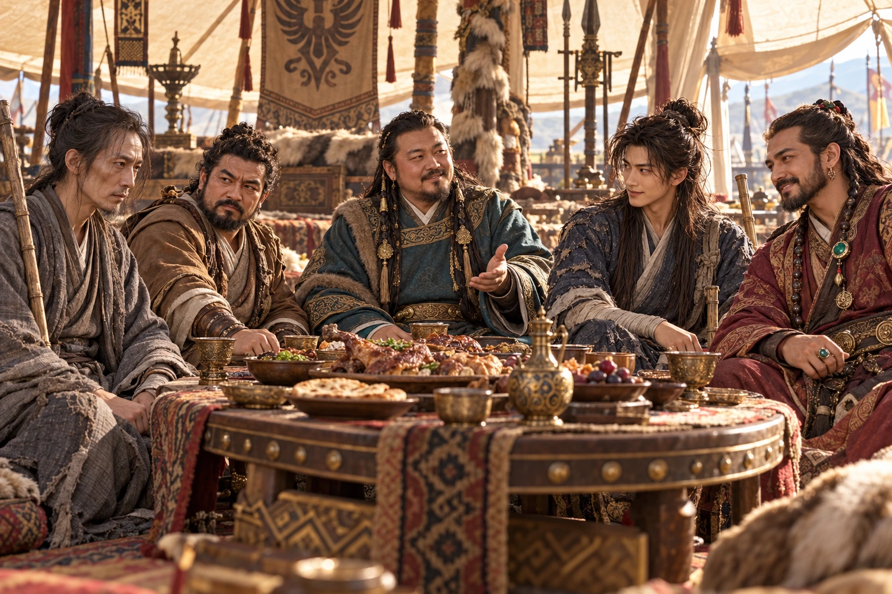
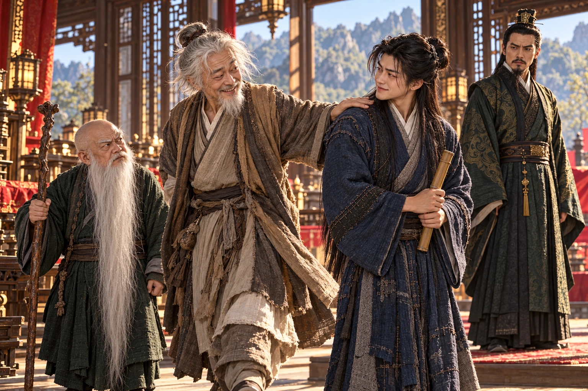
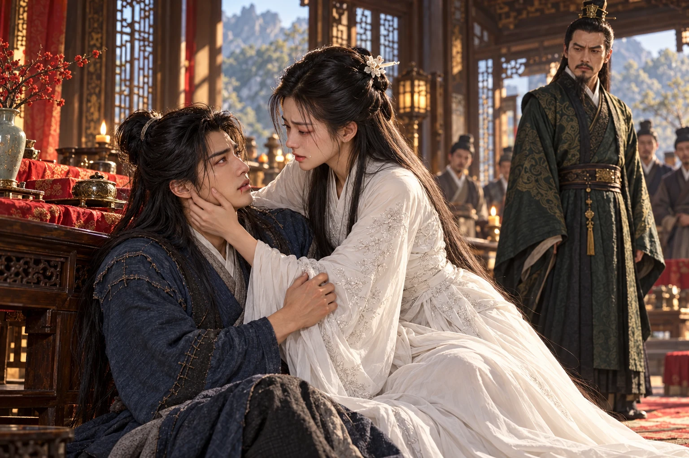
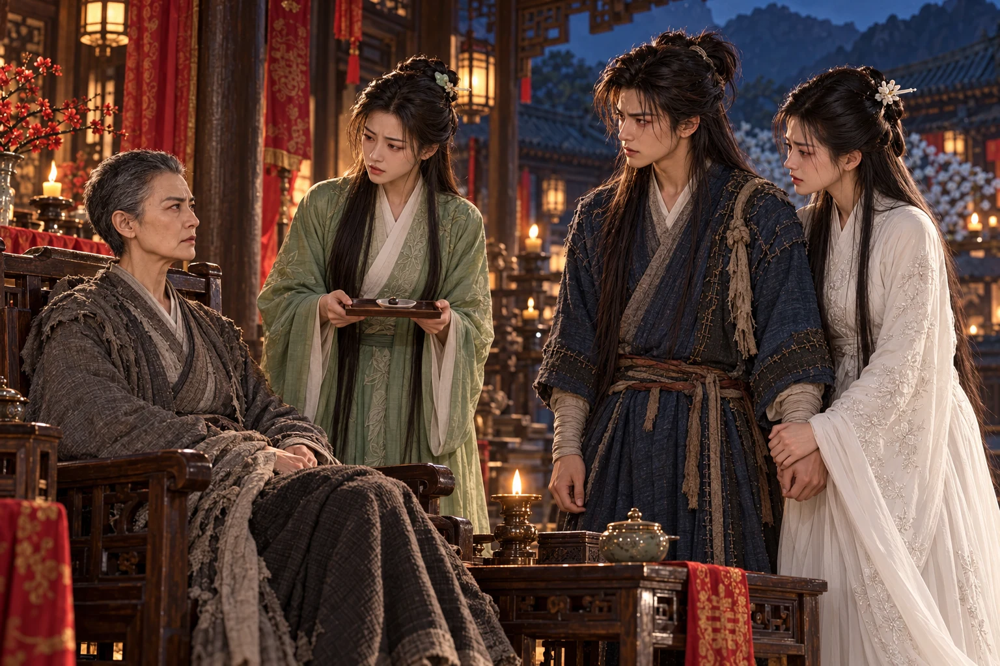

Lima hari sesudah pertemuan di gubuk, dapat berjalan tanpa menumpukan seluruh berat pada bambu. Nyeri di dada belum lenyap, tetapi napasnya tak lagi patah setiap kali jalan menanjak. pun telah cukup pulih untuk berangkat. Di hadapan tenda besar rombongan Mongol, biksu itu merapikan jubahnya dan mengingatkan Dani agar menjaga ucapan.
“Kalau Pangeranmu hendak membeli kesopanan, seharusnya engkau membawa orang lain,” jawab Dani. “Aku hanya punya satu jubah baik. Itu pun penuh tambalan.”
Jinlun menoleh tajam. Namun dari balik tirai terdengar tawa, lalu seorang lelaki berwajah tenang keluar menyambut. tidak memakai mahkota; kemewahannya justru tampak pada orang-orang yang segera menyingkir ketika ia melangkah.
“Jubah dapat diganti. Orang berbakat sukar dicari,” katanya. “Silakan masuk, Tuan Muda Dani.”
Di meja telah duduk empat orang dengan sikap berlainan. pucat dan kurus, menggenggam tongkat seperti orang menunggu pemakaman. , lelaki pendek dari jauh di barat daya, mengetukkan jemarinya dengan tak sabar. berpakaian saudagar; batu permata menghiasi tubuhnya, dan senyumnya selalu tiba lebih dahulu daripada maksudnya. bertubuh besar, makan tanpa menyembunyikan nikmatnya. Bersama Jinlun, mereka adalah lima petarung yang hendak dipakai Kublai.

“Duduklah di dekatku,” seru Ma Guangzuo. “Di sebelah orang pucat itu daging pun seakan kehilangan selera.”
“Aku khawatir kalau duduk di dekatmu, dagingnya kehilangan tempat,” sahut Dani sambil memberi hormat. Ma menatap piring yang hampir kosong, lalu tertawa begitu keras hingga Nimoxing mendengus.
Kublai menggeser hidangan untuk tamu barunya. Ia menanyakan guru-guru Dani, mendengarkan jawaban yang sengaja tidak lengkap, kemudian menawarkan kesempatan belajar dan kedudukan. Caranya tidak mendesak. Ia membuat tawaran itu terdengar seperti pintu yang kebetulan terbuka.
“Orang muda patut mempunyai tempat untuk memakai kepandaiannya,” katanya.
“Apakah tempat itu memerlukan aku mengambil gandum petani?” Dani teringat gerobak di jalan. “Kalau demikian, prajurit Pangeran lebih pandai daripadaku. Mereka mengambil tanpa perlu belajar silat.”
Suara kunyahan berhenti. Jinlun menaruh cawannya. Kublai memandang pemuda itu sejenak sebelum menjawab, “Jika ada yang bertindak sewenang-wenang, kesalahannya perlu diperiksa. Engkau boleh menyampaikannya kepadaku.”
Jawaban itu rapi, tetapi tidak mengembalikan gandum yang telah diangkut. Dani menyimpan keberatannya. Kemarahan kepada keluarga Guo telah membawanya sampai ke meja ini; ia belum bersedia membiarkan kemarahan itu menentukan semua orang yang harus dianggap musuh.
Percakapan terputus oleh seseorang yang menyelinap di antara penjaga. Seorang tua berjanggut putih mengambil tempat di kursi kosong, meraih makanan, lalu bertanya dengan mulut belum selesai mengunyah, “Di mana ? Mengapa banyak sekali orang duduk di sini kalau dia tidak ada?”
Jinlun mengenali . Sikapnya segera berubah ramah, tetapi lelaki tua itu sudah memandangi tongkat Xiaoxiangzi dengan rasa ingin tahu. Ketika tongkat ditarik menjauh, Zhou ikut menarik taplak; cawan bergeser, tangan para petarung bergerak, dan Ma Guangzuo menyelamatkan piringnya dengan kedua lengan.
menekan ujung taplak dengan bambunya. “Qianbei, kalau hendak menguji ilmu mereka, tinggalkan hidangannya. Hidangan ini tidak mempunyai dendam dengan siapa pun.”
Zhou berseri-seri. “Engkau menjaga makanan. Aku menjaga permainan. Kita berdua cukup berguna!”
Ia mengulurkan tangan ke arah Dani, kemudian mendadak mengubah arah untuk menguji pegangannya. Dani membalik bambu; telapak tua itu telah berada di sisi lain. Dalam dua gerak saja, bambu berpindah tangan tanpa benturan keras pada dadanya. Zhou mengembalikannya sambil terkekeh. Dani kesal karena kalah demikian mudah, tetapi ingin melihat gerakan itu sekali lagi.
Sebelum ia sempat meminta, empat orang berjubah hijau tiba membawa . Mereka menuntut Zhou bertanggung jawab atas kekacauan di lembah mereka. Lelaki tua itu berhenti tertawa sesaat, lalu menyerahkan kedua tangan dengan wajah terlalu patuh.
“Kalau aku ikut, kalian tidak boleh mengatakan aku takut.”
Jaring menutup tubuhnya. Dani hampir maju, tetapi melihat satu mata Zhou mengedip kepadanya dari sela benang. Ia menahan langkah. mengusulkan mengikuti mereka: orang dengan kemampuan seperti Zhou terlalu berharga untuk dilepaskan begitu saja. menyetujuinya; Dani ikut karena penasaran pada si tua dan orang-orang yang berani menangkapnya.
Jalan sempit berakhir di cekungan hijau yang terlindung tebing. , demikian para pengawal menyebutnya. Air mengalir di sisi batu, rumah-rumah teratur berdiri di balik pepohonan, dan bunga merah kekuningan tumbuh begitu lebat sehingga tempat itu tampak lebih cocok bagi orang yang hendak melupakan perang. Namun para pengawal memegang jaring mereka dengan kesiagaan yang tidak cocok dengan ketenangan taman.
Zhou telah dibawa lebih dahulu ke aula. Ketika mengeluhkan hidangan tanpa daging, seorang gadis berjubah hijau menunduk dan menjelaskan aturan lembah. Teguran membuat pipinya makin pucat; ia bertanggung jawab menerima tamu, tetapi tampak tidak terbiasa dibantah banyak orang sekaligus.
“Saudara Ma,” kata Dani, “mereka memberimu semangkuk sayur. Tidak seorang pun memintamu menikah dengannya. Makanlah dahulu.”
Ma tertawa. Gadis itu tak berhasil menahan senyum. Dani melihatnya dan membungkuk sedikit. “Nah, sekarang sambutannya lebih baik. Sejak tadi bunga-bunga di sini saja yang berani memperlihatkan warna.”
“Ayahku tidak menyukai tamu yang mempermainkan aturan.”
“Kalau begitu, jangan sampaikan kepadanya bahwa aku mempermainkan Saudara Ma.”
Gadis itu memalingkan wajah, tetapi senyumnya belum hilang. Namanya , putri penguasa lembah. Ketika rombongan berjalan ke aula, ia tinggal sebentar untuk memperingatkan Dani yang tangannya sudah mendekati kuntum bunga.
“ mempunyai duri. Jangan memetiknya.”
“Namanya begitu ramah, perbuatannya sebaliknya.” menarik tangan terlambat. Setitik merah muncul di jari. “Apakah semua yang cantik di lembah ini menyambut orang dengan cara demikian?”
Lü’e meraih pergelangannya, cemas. “Aku bersungguh-sungguh. Jika engkau memikirkan orang yang kaucintai, lukanya akan terasa sakit.”
Gurauan berikutnya telah sampai di ujung lidah Dani ketika bayangan wajah putih muncul di benaknya. Rasa nyeri menusuk dari jari ke lengan. Ia terkejut, menarik napas, dan langsung memandang bunga itu dengan lebih hati-hati. Lü’e memberinya petunjuk memakan bagian tumbuhan yang dapat meredakan keluhan ringan, sambil mengingatkan bahwa itu bukan penawar bagi banyak tusukan.
“Sudah ada orangnya?” tanyanya, begitu pelan hingga seolah hanya bertanya tentang duri.
Dani mengangguk. “Aku sedang mencarinya. Kalau ia tahu aku masih sempat menggoda gadis di jalan, barangkali telingaku yang lebih dahulu ditolong daripada jariku.”
Lü’e tersenyum tipis. Perasaan senang yang baru tumbuh belum mempunyai nama, tetapi jawaban itu telah memberinya alasan untuk menyembunyikannya. Ia melepaskan pergelangan Dani dengan hati-hati, kemudian menunjukkan jalan menuju aula.
Di sana, penguasa lembah telah menunggu. berwajah kuning pucat, berpakaian rapi, dan berbicara seakan setiap katanya sudah diperiksa sebelum dilepaskan. Di sisinya berdiri , lelaki pendek berjanggut sangat panjang, yang menerima teguran gurunya tentang kegaduhan para tamu tanpa membantah.
ternyata tidak memerlukan pertolongan. Setelah mempermainkan tuduhan pencurian dan membuat para penjaga salah menangkap orang, ia melintas di dekat Dani, menepuk bahunya, lalu keluar melalui celah penjagaan dengan tawa yang masih terdengar sesudah tubuhnya lenyap di tikungan. Dani menahan senyum. Si tua sengaja mengikuti untuk meneruskan kenakalannya di tempat orang-orang itu paling merasa berkuasa.

Gongsun menutupi kemarahannya dengan mempersilakan rombongan duduk. Ia mengumumkan pernikahan yang hendak dilangsungkan hari itu dan meminta mereka menjadi saksi. baru hendak menjawab ketika Dani berdiri begitu mendadak hingga kursinya bergeser.
Di serambi, seorang perempuan berpakaian putih berjalan dengan mata tertunduk.
“Bibi!”
berhenti. Bahunya bergetar; wajahnya terangkat dengan harapan yang belum sempat ia larang. Dani telah berlari keluar, meninggalkan bambu di samping kursi. Ia meraih tangannya dengan kedua tangan sendiri, tertawa dan hampir menangis dalam tarikan napas yang sama.
“Bibi, akhirnya kutemukan juga. Engkau bersembunyi begitu jauh. Tahukah engkau berapa banyak orang yang sudah kutanyai?”
Ia ingin mengatakan banyak hal: luka, , ayahnya, malam-malam ketika ia terbangun dan lupa bahwa tempat di sisinya kosong. Namun Xiaolongnü menarik tangannya perlahan.
“Tuan muda telah keliru mengenali orang.”
mengira ia sedang marah. Ia tersenyum, merendahkan suara seperti dahulu ketika tertangkap berbuat nakal. “Baiklah, aku memang patut dihukum. Tetapi jangan menghukum namaku juga. Nama itu Bibi sendiri yang biasa panggil.”
“Namaku Liu. Aku tidak mengenalmu.”
Ia melewati Dani dan duduk di samping Gongsun. Langkahnya tetap teratur, tetapi ujung lengan bajunya terpilin dalam genggaman. Dani mengikuti dengan wajah kehilangan warna. Kepalanya mencari penjelasan yang masih dapat ditanggung: ia sakit, ia sedang diancam, atau ia sedang melindunginya dari sesuatu yang belum terlihat.
Gongsun berdiri setengah langkah di depan kursi perempuan itu. “Nona Liu adalah calon istriku. Jagalah sikapmu.”
“Bibi tidak pernah menyebut nama itu.” Dani menatap Xiaolongnü, bukan Gongsun. “Lihat aku sekali lagi. Kalau engkau sedang sakit, katakan. Jangan membuatku mencari penyakit yang tidak ada.”
Jinlun dipanggilnya menjadi saksi. Biksu itu mengenal keduanya dengan sangat baik; justru karena itulah ia berpura-pura ragu. Selama pasangan tersebut terpisah, ilmu pedang mereka tidak akan mengancamnya. Mendengar jawaban yang mengelak, Dani teringat telapaknya sendiri di punggung Jinlun ketika menolong di gubuk. Rahangnya mengeras.
“Rupanya luka di dadamu telah sembuh, tetapi ingatanmu tertinggal di gunung.”
tidak membiarkan pertengkaran melebar. Ia menerangkan bagaimana, kira-kira setengah bulan sebelumnya, ia menemukan Nona Liu tergeletak di lereng ketika mencari tanaman obat. Napasnya lemah akibat gangguan latihan . Ia membawanya ke lembah dan merawatnya dengan pengobatan keluarganya.
Xiaolongnü mendengar setiap kata. Pertolongan itu sungguh terjadi. Yang tak diketahui orang-orang di aula adalah mengapa ia sampai rebah seorang diri di tempat tersebut.
Sesudah meninggalkan Dani sebelum fajar, ia sengaja menjauhi jalan ke . Dani pasti akan mencarinya di rumah mereka. Ia berjalan tanpa tujuan di bukit-bukit sepi, mencoba menenangkan hati melalui latihan yang sejak kecil diajarkan kepadanya. Tetapi setiap usaha mengosongkan pikiran justru mengembalikan suara Dani. Kerinduan mengusik aliran tenaga; luka lama kambuh sebelum ia sempat menghentikannya. Gongsun menemukannya dalam keadaan itu.
Selama dirawat, ia tidak belajar melupakan. Ia hanya makin mengetahui betapa mudah dirinya menyerah pada keinginan kembali. Pada malam-malam yang sunyi, keputusan meninggalkan Dani terasa lebih sulit daripada ketika pertama dibuat.
Lalu Gongsun melamarnya.
tidak mencintai lelaki itu. Ia bahkan tak membayangkan kebahagiaan ketika menerima lamarannya. Dalam kepolosannya, ia mengira pernikahan dapat menjadi penghalang yang tidak sanggup ia lewati sendiri: jika telah menjadi istri orang lain, ia tidak boleh lagi mencari Dani. Dan bila Dani membencinya, pemuda itu akan berhenti mempertahankan cinta yang membuatnya dihina sebagai murid durhaka.
Ia telah mengingat wajah Dani tidur ketika mengucapkan persetujuan itu. Ia menyangka sedang menyerahkan kebahagiaannya sendiri agar Dani kelak dapat hidup tanpa celaan. Sekarang orang yang hendak diselamatkannya berdiri di hadapannya, hancur oleh usaha penyelamatan tersebut.
“Bibi,” kata , makin pelan, “kalau aku menyebut makam kita, apakah engkau juga tidak mengenalnya?”
Jari Xiaolongnü mencengkeram kain. Ia tidak menjawab. Dani melihat gerakan itu dan maju selangkah; harapan yang kecil segera menyala lagi.
tersenyum kepada tuan rumah. “Pertolongan yang berakhir dengan pernikahan. Sungguh pertemuan yang baik.”
Nyeri di jari Dani merambat bersamaan dengan sesak yang menekan luka dadanya. Ia hendak menyahut, tetapi napasnya tertahan. Darah naik ke mulutnya dan tumpah ketika ia membungkuk. Satu tangan mencengkeram tepi meja; tangan yang lain masih terulur ke arah Xiaolongnü.
Perempuan itu bangkit sebelum sempat memikirkan nama samarannya. Kursi di belakangnya terdorong. Ia menangkap Dani ketika lututnya melemah, meraih wajahnya, lalu memanggil namanya dengan suara yang sama sekali tidak menyerupai Nona Liu.
“Dani, jangan memaksa napasmu. Lihat aku. Aku di sini.”
Dani menggenggam lengan bajunya. “Sekarang Bibi ingat?”
Air mata jatuh dari mata Xiaolongnü. Tangannya mencoba menyeka darah, tetapi gemetar terlalu keras. Ia sendiri harus menelan batuk yang menggores tenggorokan; ketakutan melihat Dani demikian membuat latihan penenang hatinya tak berguna.
“Aku ingat semuanya,” katanya. “Aku tidak pernah berhasil melupakanmu.”
Dani menatapnya, seolah takut satu kedipan akan mengembalikan perempuan asing tadi. Xiaolongnü merapatkan tangan pada pipinya. Ia telah sanggup membayangkan dirinya menderita sendirian selama bertahun-tahun. Melihat Dani menderita di depan matanya, ia tidak sanggup bertahan bahkan sampai tarikan napas berikutnya.

“Engkau hendak menikah dengannya?” Dani bertanya, suaranya serak. Ia tidak menuding ; pandangannya tidak beranjak dari wajah yang baru kembali mengenalinya.
“Aku takut kembali mencarimu,” jawab Xiaolongnü. “Kalau aku menjadi istrinya, aku harus tinggal. Kalau engkau membenciku, engkau tidak perlu lagi melawan semua orang untukku.”
“Lalu siapa yang mengatakan aku akan bahagia membencimu?”
terdiam. Ia telah memikirkan hinaan, larangan, dan kesepian Dani di dalam makam. Ia tidak pernah berhasil membayangkan hidup Dani tanpa dirinya secara utuh. Yang diketahuinya hanyalah bahwa ia mencintainya dan tidak ingin menjadi penyebab penderitaannya; dari perasaan yang dalam itu, ia telah menarik kesimpulan yang keliru.
“Aku mendengar mereka menghina engkau,” katanya. “Bahkan begitu marah. Aku tidak takut dibenci, . Tetapi mereka akan mengucapkannya kepadamu sepanjang hidup.”
“Biar mereka kehabisan napas.” Dani mengusap pipinya dengan ibu jari. “Aku dapat menutup telinga. Kalau Bibi pergi, apa yang harus kututup supaya tidak mencarimu?”
Xiaolongnü memegang tangannya lebih erat. “Aku tidak ingin menikah dengannya.” Ia mengucapkannya kepada Dani, kemudian menoleh kepada Gongsun. “Aku berterima kasih karena engkau menolongku. Tetapi aku tidak dapat menjadi istrimu. Aku akan pergi bersama Dani.”
Perubahan wajah Gongsun begitu cepat hingga menunduk ketakutan. Tadi ia masih bisa menganggap pemuda itu salah mengenali orang. Sekarang seluruh tamunya mengetahui calon pengantinnya memilih lelaki lain. Ia tidak menanyakan perasaan perempuan yang telah dirawatnya; yang dirasakannya adalah sesuatu miliknya sedang diambil.
“Persetujuanmu telah diberikan. Apakah engkau hendak mempermainkan kehormatanku?”
“Aku salah ketika mengatakannya,” jawab Xiaolongnü. “Aku akan mengakuinya kepada siapa pun. Namun menikahimu sekarang juga merupakan kebohongan.”
Dani berusaha berdiri. “Kalau Tuan Lembah menginginkan ucapan terima kasih, kami memberikannya. Kalau engkau menginginkan pengantin yang mencintai orang lain, aku khawatir perayaanmu akan sangat sunyi.”
“Jaga mulutmu!” maju, tongkatnya menghantam lantai. Ia tersinggung oleh penghinaan kepada guru yang selama ini dihormatinya. “Engkau datang sebagai tamu dan membuat kekacauan.”
“Kalau begitu, biarkan kami pergi. Kekacauannya ikut keluar.”
Tongkat Fan menyapu. Dani menarik Xiaolongnü menjauh, menyambar bambu di tepi kursi, lalu menangkis dengan sudut miring. Benturan tetap merambat ke bahunya. Ia menghindari adu tenaga berikutnya, memancing tongkat ke kaki meja, kemudian melangkah masuk saat janggut panjang Fan menyambar lengannya.
“Janggut Qianbei lebih rajin menerima tamu daripada pemiliknya!”
Kelakar itu membuat Fan semakin marah dan membuka gerak terlalu lebar. Dani menyelipkan bambu di bawah lilitan janggut untuk melepaskan lengan, lalu memakai perubahan untuk mengungkit tongkat lawan. Ia belum pulih untuk duel panjang. Ketika memperoleh ruang mundur, ia mengambilnya, bukan mengejar kemenangan yang akan menghabiskan napas.
sendiri menghadang pintu. Dani mencoba sambil berkelit, tetapi tubuh lawannya tidak melumpuh sebagaimana mestinya. Balasan telapak mematahkan bambu. Dani terlempar beberapa langkah dan menahan tubuh pada meja, terkejut oleh yang belum dipahaminya.
sudah berdiri di sisinya dengan pedang perjalanan terhunus. Kepada Dani suaranya lembut, “Jangan menerima telapaknya.” Kepada Gongsun ia berkata dingin, “Minggirlah.”
-jaring direntangkan. Xiaolongnü memberikan sarung tangan pelindungnya kepada ; ia menangkap tepi jaring tanpa menyerahkan telapak pada mata kait. Sebilah pedang penjaga terlepas ketika pergelangannya dipukul gagang pedang Xiaolongnü. Dani memungutnya, dan kedua ujung bilah mulai bergerak saling melindungi.
Untuk sesaat, Gongsun kehilangan ruang. Akan tetapi mengenali cara pedang pasangan itu bekerja. Ia memperingatkan tuan rumah agar tidak terus mengejar Dani dan membiarkan Xiaolongnü menutup celah. Gongsun mengganti irama, memanggil dan golok keemasannya, lalu membuat gerak senjata lunak menyerupai senjata berat dan sebaliknya. Dani salah membaca satu perubahan; ujung jubahnya terbelah.
Lü’e memandang ayahnya dengan gelisah. Ia tidak berani bersorak ketika tamu tersudut. Ia pun tak sanggup menghendaki ayahnya terluka. berteriak agar mereka berhenti, tetapi jaring telah menutup jalan dari kedua sisi. Xiaolongnü mencoba membuka celah terakhir; Dani menahan sisi yang hampir melilit tubuhnya, dan rasa nyeri di dada memperlambatnya tepat ketika jaring ditarik.
Mereka tertangkap.
Gongsun memerintahkan ditumpukkan pada Dani yang masih terikat. Xiaolongnü meronta untuk menjauhkannya; beberapa duri melukai tangannya sebelum para penjaga menarik mereka terpisah. Dani melihat darah di jari-jarinya dan berteriak marah. Gongsun membiarkan kemarahan itu bekerja bersama racun.
“Engkau menyebut dirimu penolong?” seru Dani. “Bahkan bunga di tamanmu kauajari merampok!”
Gongsun tidak menyahutnya. Ia menerangkan kepada Xiaolongnü bahwa racun berat itu dapat membunuh dalam tiga puluh enam hari. Penawarnya hanya berada dalam kuasanya. Semakin Dani merindukannya, semakin berat deritanya; perempuan itu dapat menghentikan semua itu dengan memenuhi janji pernikahan.
Xiaolongnü memandang Dani yang menggigil dalam . Naluri untuk menyerahkan dirinya kembali muncul, begitu cepat dan sederhana sehingga menakutkan. “Sembuhkan dia dahulu,” katanya. “Jika engkau benar mempunyai obat, berikan sekarang.”
“Sesudah upacara.”
“Bibi, jangan.” Dani menggigit kata-katanya di sela nyeri. “Sejak tadi ia menyebut kita tamu. Lihat bagaimana ia memperlakukan tamunya.”
Gongsun menyuruh mereka dibawa ke ruang terpisah. Kepada Xiaolongnü ia menjanjikan waktu untuk berpikir, sambil menempatkan penjaga di pintunya. Ia masih berharap penderitaan Dani akan membuat perempuan itu menuruti kehendaknya.
datang ketika penjaga telah lengah. Ia melumpuhkannya dari belakang, lalu membuka jaring dengan tangan dibungkus kain. Dani hampir menjerit ketika bunga-bunga disingkirkan. Ia menahan suara supaya gadis itu tidak tertangkap karena menolongnya.
“Ayah akan membunuhmu jika aku membiarkan ini,” bisik Lü’e.
“Dan apa yang akan dilakukannya kepadamu?”
Gadis itu tidak menjawab. Air mukanya menunjukkan bahwa ia telah memikirkan pertanyaan itu dan tetap datang. ingin mengeluarkan satu kelakar untuk meredakan takutnya, tetapi kali ini tidak menemukannya. Ia hanya membantu menarik simpul terakhir dengan jemari yang kaku.
Tempat penyimpanan penawar ternyata kosong. Lü’e mengira ayahnya memindahkan penawar karena mengetahui putrinya mungkin membantah. Ia membawa Dani melalui lorong belakang, berharap dapat mencapai , tetapi menunggu di depan pintu yang tampak sebagai jalan keluar.
“Engkau memilih orang yang baru sehari kaukenal?” tanyanya kepada putrinya.
Lü’e berdiri di depan Dani. “Aku memilih agar Ayah tidak membunuhnya.”
Wajah Gongsun mengeras. Ia menginjak mekanisme tersembunyi sebelum Dani sempat melihat bahaya di lantai. Papan bergeser. Dani menarik Lü’e, tetapi luka dan racun membuat geraknya terlambat; keduanya jatuh ke kegelapan, sementara suara penutup menelan jeritan gadis itu.
Air menghantam tubuh mereka. Dani membawa Lü’e ke tonjolan batu, lalu menggigil ketika melihat punggung buaya membelah permukaan beberapa langkah di belakang. Dengan berpegangan pada celah dinding, mereka meninggalkan kolam dan menemukan lorong menuju rongga yang mendapat cahaya dari lubang tinggi. Pohon-pohon kurma tumbuh di bawahnya.
Sebelum melangkah lebih jauh, Dani meraba bagian dalam jubahnya yang terasa mengganjal. Sebuah bungkusan kecil berada di sana; ia tidak pernah memasukkannya. Lü’e mengenali botol obat di dalamnya dan berseru tertahan. Benda yang dicari ayahnya dari ternyata berpindah kepada Dani. Ia teringat tepukan si tua sebelum meninggalkan aula, lalu menggeleng dengan kagum sekaligus kesal karena sama sekali tidak menyadarinya.
“,” kata Lü’e. “Ini penawar yang hilang. Hanya ada satu di dalam botol.”
Dani hampir menelannya, kemudian teringat tangan Xiaolongnü yang tertusuk. Ia menyumbat botol kembali. Lü’e melihat gerakan itu dan memahami kepada siapa obat tersebut akan diberikan. Ia ingin membantah, tetapi tahu bahwa permohonannya tidak akan mengubah pilihan Dani. Janji ayahnya untuk menyembuhkan juga kini terbuka sebagai dusta: penawar yang dijanjikan bahkan tidak lagi berada padanya.
“Lü’e?” Suara perempuan memanggil dari tanah. “Apakah itu engkau?”
Sesosok tubuh kurus berada di antara akar. Rambutnya jarang, pakaiannya hampir tak berbentuk, dan tangan serta kakinya tidak dapat menopang diri. Lü’e mendekat ke tempat cahaya jatuh, lalu berlutut dengan tatapan tidak percaya.
Perempuan itu mengenali tanda pada tubuh putrinya dan menyebut kenangan yang tidak mungkin diketahui orang asing. menggeleng, terisak. Ayahnya telah mengatakan ibunya mati. Sekarang suara itu memanggilnya lagi dari tempat yang selama ini berada di bawah rumah mereka.
“Ibu?”
merapatkan wajah pada rambut anaknya. Untuk beberapa saat, kutukan yang telah disimpannya bertahun-tahun tidak keluar. Ia hanya mengulang nama Lü’e, seakan sedang menghitung kembali semua hari yang hilang.
menyingkir sedikit, memberi mereka ruang. Namun perempuan itu segera menoleh tajam kepadanya dan menuntut tahu siapa pemuda yang dibawa putrinya. Ketika mendengar tentang perkawinan Gongsun, tawanya pecah begitu keras hingga Lü’e tersentak.
“Istri lamanya belum menjadi tulang, ia telah menyiapkan yang baru!”
Cerita Qiu keluar dalam potongan kemarahan. mempunyai hubungan dengan pelayan bernama Rou’er. Qiu membunuh perempuan itu dalam kecemburuannya; ketika menceritakannya sekarang, penyesalan tidak tampak di wajahnya. Gongsun kemudian berpura-pura berdamai, membuatnya tidak berdaya, merusak urat anggota tubuhnya, dan membuangnya ke bawah tanah.
Lü’e menangis untuk ibunya, tetapi juga ngeri pada cara ibunya menyebut kematian Rou’er. Ia ingin mengetahui siapa yang benar dalam keluarganya. Semakin banyak yang didengar, semakin sukar pertanyaan itu dijawab dengan memilih salah satu orang tua.
Qiu hidup dari air dan buah yang tumbuh di rongga tersebut. Tangannya tidak dapat meraih cabang; ia mengembangkan cara melontarkan dengan mulut. Sebuah biji melesat dan mengguncang dahan di atas kepala Dani. Buah-buah jatuh, memperlihatkan ketepatan dan tenaga yang membuatnya segera menjauhkan wajah dari arah mulut perempuan itu.
“Bawa aku keluar,” perintah Qiu. “Kalian ingin melihat Gongsun takut? Aku tahu bagaimana membuatnya takut.”
“Kami akan menolong Qianbei,” kata Dani. “Tetapi kalau aku sedang memanjat, jangan mengujiku dengan biji kurma. Aku belum pandai menjadi buah.”
Lü’e tertawa pendek di tengah tangisnya. Qiu mendengus, tetapi membiarkan mereka bekerja. Kulit pohon dipilin menjadi tali dan diikat pada cabang yang dapat dikaitkan melintang pada mulut lubang. Mereka menghabiskan beberapa jam untuk menyiapkannya. Dani memanjat dengan kedua lengan yang berkali-kali harus berhenti, lalu mengangkat Qiu dan membantu Lü’e sesudah memperoleh di atas.
Setiap kali memikirkan , duri-duri yang telah dilepaskan seolah kembali menusuk tubuhnya. Ketika akhirnya mereka mencapai udara malam, Dani hampir jatuh berlutut. Lü’e memegang lengannya tanpa diminta.
“Aku belum membayarmu untuk pertolongan yang pertama,” katanya lirih.
“Jangan dihitung sekarang.” Lü’e memandang aula yang terang di kejauhan. “Bawa dia pergi sebelum Ayah memaksanya.”
Di jalan turun, yang mencari penyusup menghadang mereka. Qiu menghantam titik tubuhnya sebelum tongkat sempat diayunkan. Ia memerintahkan Dani membunuh murid Gongsun itu, tetapi Dani menolak. Fan masih membela gurunya tanpa mengetahui seluruh perbuatan lelaki tersebut; membunuh orang yang telah lumpuh tidak akan menolong Xiaolongnü. Mereka meninggalkannya hidup di tempat terlindung sampai terurai.
Qiu menolak menunggu pagi. Dengan menunjukkan jalan dan Dani membantu menopang ibunya, mereka mencapai aula sebelum upacara terlaksana. Kain merah telah digantung, tetapi Xiaolongnü masih berdiri dalam pakaian putih. Ia menuntut melihat Dani sembuh sebelum bersedia melangkah ke tempat pengantin.
Ketika Dani muncul, wajah Xiaolongnü berubah terang. Gongsun mematung melihat orang yang disangkanya telah mati kembali berjalan ke aula. Xiaolongnü berlari menghampiri, lalu berhenti melihat cara Dani menahan tubuh. Dani mengeluarkan botol kecil yang ditemukan di bawah tanah dan menyodorkan pilnya.
“Bibi, ini penawarnya. Telan dahulu.”
“Engkau sudah meminumnya?”
terlambat menjawab. Xiaolongnü segera memahami. Ia menutup jemarinya di atas tangan Dani, hendak mendorong obat itu kembali. Pemuda itu memegang kedua tangannya.
“Bibi lebih sanggup menolongku jika sudah sembuh. Jangan membuat kita berdua jatuh di depan orang itu.”
Ia menunjuk dengan dagu. Alasan itu tidak menghapus takut Xiaolongnü, tetapi memberinya sesuatu yang dapat dilakukan untuk Dani. Ia menelan pil tersebut, lalu memeluk lengannya erat, menahan keinginan memarahinya karena sekali lagi memberikan keselamatan kepada orang lain.
Gongsun maju hendak memisahkan mereka. Suara menghentikannya.
“Engkau masih suka mengambil keputusan bagi perempuan yang berdiri di depanmu, Gongsun Zhi?”
Wajah lelaki itu kehilangan warna. Lü’e menyebut perempuan di sisinya sebagai ibunya. Beberapa orang lama di lembah mengenali suara dan wajah tersebut; bisik-bisik bergerak dari satu sudut aula ke sudut lain. mengambil kursi, dan Dani membantu mendudukkan Qiu di hadapan suami yang telah menguburnya hidup-hidup.
Gongsun mula-mula menuduh mereka membawa penyamar. Qiu menyebut tempat-tempat rahasia dalam rumah dan perlakuannya terhadap Rou’er. Ketika nama pelayan itu keluar, penyangkalan Gongsun berubah menjadi kemarahan. Ia mengakui pembalasannya sambil menyalahkan kekejaman istri. Lü’e berdiri di tengah pengakuan mereka, mendengar orang tuanya berlomba menyebut alasan untuk saling menghancurkan.
Dalam pertengkaran itu, Gongsun memerintahkan surat lama kakak Qiu dibawa dari ruangnya, lalu membacakan kabar kematian kakak sulung mereka yang dihubungkan dengan dan . Ia hendak menghancurkan kebanggaan Qiu kepada keluarganya. Perempuan itu berhenti mencaci, mendengar kehilangan yang selama ini tak sampai ke bawah tanah. Kesedihan hanya muncul sekejap sebelum berubah menjadi kemarahan lain yang belum menemukan sasaran.
“Sekalipun Ibu bersalah, mengapa Ayah mengatakan ia sudah mati?” tanya Lü’e. “Mengapa membiarkannya hidup di bawah tanah selama ini?”
Gongsun mendorong putrinya ketika ia mencoba menahan lengannya. Lü’e tersandung pada kursi Qiu; keduanya hampir jatuh, dan kepala Qiu membentur sisi tiang. membantu mereka, merobek kain untuk menekan luka, lalu menatap Gongsun dengan rasa muak yang tidak lagi disembunyikan.
“Engkau mengatakan akan menjagaku,” katanya. “Istri dan anakmu sendiri engkau perlakukan begini. Bagaimana aku dapat mempercayaimu?”
Gongsun mencoba menyebut cinta. Xiaolongnü tidak menjawab. Ia kembali ke sisi Dani; pilihan itu lebih tegas daripada perdebatan yang dikehendaki tuan lembah.
mengambil dua pedang lama dari ruang senjata yang berdekatan, kemudian menyerahkannya kepada pasangan tersebut. dan Pedang Perempuan itu tersimpan sebagai pasangan; bilahnya lebih baik daripada pedang penjaga yang telah dirampas tadi. Ia juga mengembalikan sarung tangan Xiaolongnü yang ditinggalkan para penjaga. Tindakan itu membuat ayahnya mengangkat senjata dengan tatapan seolah tidak lagi melihat seorang putri.
“Kami hendak pergi,” kata Dani. “Jangan sampai seluruh tamumu pulang dengan mengira upacara di lembah ini selalu memakai .”
Gongsun menyerang. Racun masih mengganggu , sehingga Xiaolongnü mengambil lebih banyak tekanan dan membiarkannya menyerang hanya ketika ada celah. Pasangan pedang itu tidak serta-merta membuat mereka menang. Namun Qiu mengenali tipu perubahan golok dan pedang suaminya, lalu meneriakkan peringatan yang memaksanya membatalkan beberapa serangan.
Di sela pertempuran, Qiu meminta Lü’e memberinya teh. Ketika gadis itu menoleh kepada Dani, Qiu menunduk ke dekat cawan dan membiarkan darah dari kain di kepalanya mencemari minuman. Ia menyuruh Dani membasahi tenggorokan. Pemuda itu menurut dengan curiga; Gongsun yang kembali menyerang memperoleh semburan teh tepat pada mulutnya.
Rasa darah membuat lelaki itu tertegun. keluarganya mempunyai pantangan terhadap daging dan darah. Kini Qiu menunjukkan kelemahan yang dikenalnya sejak menjadi istri. Dani membaca perubahan sikap itu, mencoba satu , dan mendapati benar-benar harus mengelak.
“Engkau—!” Gongsun menerjang dengan golok terangkat.
Lü’e bergerak melindungi ibunya. melesat melewati bahunya dan mengenai satu mata Gongsun. Ia menjerit, memutar senjata untuk menghalangi pengejaran, lalu melarikan diri ke halaman. Tidak seorang pun berhasil menangkapnya; Qiu memaki karena serangan berikutnya terhalang tubuh putrinya sendiri.
Lü’e jatuh terduduk. Ayahnya pergi meninggalkan darah di lantai, ibunya masih menghendaki kematiannya, dan ia telah menolong kedua pihak bergantian tanpa berhasil menyelamatkan keluarganya.
Dani meletakkan pedang dan membantunya bangkit. “Lü’e, lihat aku. Engkau masih dapat bernapas. Duduk dahulu.”
Gadis itu mengangguk tanpa memandang wajahnya. Ketika Xiaolongnü memberikan kain, ia menerimanya dengan kedua tangan. Kebaikan kecil itu terasa menyakitkan: perempuan yang dicintai Dani tidak memperlakukannya sebagai lawan, padahal sebagian hatinya baru saja berharap dapat berada di tempat perempuan tersebut.
Sesudah Gongsun pergi, Qiu memerintahkan pintu-pintu dijaga. Murid-murid lembah yang mengenal kedudukannya mulai menurut; belum kembali untuk membela gurunya. Para tamu tetap tinggal, sebagian karena ingin tahu, sebagian karena tak hendak menyia-nyiakan perubahan kekuasaan yang baru terjadi.
Qiu menanyakan kembali asal pil dalam botol Dani. Lü’e menceritakan temuan mereka. Perempuan tua itu mengakui bahwa dahulu banyak penawar dimusnahkannya dalam pertikaian dengan Gongsun; hanya sedikit yang tersisa. Ketika Dani hendak meminta penjelasan lebih jauh, ia malah menyuruh pemuda itu berdiri di dekat putrinya.
“Engkau telah membawa anakku melalui bahaya. Tinggallah di lembah. Jadilah suaminya.”
Lü’e mengangkat wajah, malu dan terkejut. Harapan yang tidak berani disimpannya mendadak diumumkan di depan orang-orang. Dani memandangnya, dan kali ini menyadari bahwa gurauan di taman telah menyentuh hati yang belum terlindung oleh pengalaman.
“Qianbei, telah menyelamatkanku,” katanya. “Aku tidak akan membalasnya dengan janji palsu. Orang yang akan kunikahi sudah ada di sisiku.”
“Putriku kurang baik untukmu?”
“Justru karena ia baik, jangan paksa aku menyakitinya.”
Qiu hendak menyahut, tetapi Lü’e lebih dahulu berbicara. “Ibu, jangan tanyakan lagi. Aku menolongnya supaya ia hidup. Bukan supaya ia harus menikahiku.”
Kalimat itu menghabiskan keberaniannya. Ia menunduk, dan tidak mencoba menghiburnya dengan rayuan baru. memegang tangan Dani tanpa kemenangan di wajahnya. Ia memahami kehilangan dengan sangat baik, meskipun tidak pandai menyusun kata untuk perempuan lain yang sedang mengalaminya.
memandangi pasangan itu. Kemarahan di wajahnya bercampur sesuatu yang lebih getir ketika melihat cara Xiaolongnü memeriksa napas Dani. Ia pernah menuntut cinta dengan ancaman dan memperoleh balasan serupa. Di hadapannya berdiri dua orang yang menyerahkan keselamatan masing-masing kepada yang lain tanpa disuruh.
“Masih ada obat,” katanya akhirnya.
Seluruh perhatian Xiaolongnü segera berpindah kepadanya. Qiu menyuruh Lü’e mengambil wadah kecil dari lipatan pakaian yang selalu dijaganya. Sebutir pil terakhir diletakkan pada tatakan; atas perintah ibunya, Lü’e membelahnya dan menahan kedua bagian dengan tangan gemetar.
“Aku tidak dapat berjalan membalas dendam sendiri,” kata Qiu. “Kau akan melakukannya untukku.”
Dani memandang obat itu. “Kepala ?”
“.”
Nama itu mengembalikan suara , wajah ayahnya, dan tangan Paman Guo yang dahulu menuntunnya. Semua datang bersamaan. Xiaolongnü merasakan jari-jari Dani menegang dalam genggamannya, tetapi belum memahami seluruh sebabnya.
Qiu menunjuk surat yang dibacakan Gongsun tadi. Kabar kematian kakak sulungnya baru diterima malam ini; ia telah memilih Dani untuk menagihnya. Luka bertahun-tahun membuatnya menganggap setiap orang di hadapannya hanya dapat menjadi senjata atau penghalang.
“Aku menuntut kepala Guo Jing,” ulangnya. “Bawalah kepadaku. Setengah obat ini untukmu; sisanya setelah pekerjaan selesai.”
“Nama itu juga ada dalam perkara ayahku,” kata Dani, suaranya berubah tajam.
segera menyatakan bahwa ia telah mendengar dendam Dani. Namun ia juga menyebut bagaimana pemuda itu berkali-kali membantu keluarga Guo. Ia hendak membuat Qiu meragukan janji dan memperkeras tuntutannya. Dani menatapnya dengan kebencian yang terang.
“Engkau juga pernah kutolong. Sejak tadi aku sedang memikirkan apakah itu kebodohan yang lebih besar.”
tertawa sekali, lalu berhenti ketika melihat wajah para tamu lain. Qiu tidak peduli. Yang dikehendakinya hanyalah jaminan, dan dalam tubuh Dani telah ada jaminan yang lebih kuat daripada sumpah.
“Aku akan pergi ke Xiangyang,” kata . “Aku memang harus meminta jawaban darinya.”
“Aku meminta kepala, bukan cerita perjalanan.”
Dani terdiam. Janji kepada menahannya: pastikan dahulu siapa yang bersalah. Namun darah yang dibayangkannya di malam kematian ayah, obat di depan mata, dan tangan yang tidak ingin dilepaskannya, semuanya mendesak dari arah berlainan. Ia mengambil dari tatakan dan menelannya. Ia belum mengucapkan sumpah membunuh; membiarkannya, sebab racun akan mengejarnya lebih keras daripada perkataan.
“Delapan belas hari,” kata perempuan itu setelah obat tertelan.
Xiaolongnü menegang. “Tadi tiga puluh enam.”
“Setengah pil menghimpun racun, tidak menuntaskan penawarnya. Serangannya datang dua kali lebih cepat. Ambil bagian lainnya sebelum batas itu, maka ia sembuh.”

menatap ibunya dengan ngeri. Ia tidak diberi tahu akibat pembelahan tersebut. Qiu memerintahkannya menyimpan sisa obat dan tidak mendengarkan permohonan lagi. Dani merasakan dingin merayap di tengkuk; pertolongan yang baru diterimanya ternyata telah memperpendek waktu memilih.
Xiaolongnü melangkah maju, tetapi Dani menahannya. Ia teringat dan obat yang dapat dimusnahkan dalam satu gerakan. Untuk saat ini, mereka harus keluar hidup-hidup.
Lü’e mengantar mereka sampai halaman. Ia mengembalikan buntalan kecil Dani yang ditinggalkan di aula; jarum peninggalan ibunya masih tersimpan, meski kain pembungkus lembap oleh perjalanan. Kedua pedang pasangan dibawakan bersama sarungnya. Lü’e meminta mereka memakainya, sebab ayahnya masih berada di luar dan mungkin menghadang jalan.
“Aku akan berusaha membujuk Ibu,” katanya. “Jangan mengira semua orang di lembah menghendaki syarat itu.”
“Aku tidak akan mengiranya,” jawab Dani. Ia membungkuk dalam. Kali ini tidak ada gurauan yang menyembunyikan rasa terima kasihnya. Lü’e melihat penghormatan itu, menerima batas yang dibawanya, lalu mundur sebelum air matanya memaksa mereka tinggal.
Kepada , Dani menyatakan perjalanannya bersama rombongan selesai. Ia tidak kembali kepada dan tidak menyerahkan janji tambahan. Ma Guangzuo menepuk bahunya terlalu keras, segera meminta maaf, lalu bersumpah bahwa bila bertemu lagi mereka harus makan di tempat yang tidak memakai bunga untuk menyiksa tamu.
Di jalan keluar, Xiaolongnü berjalan sedekat mungkin. Ketika Dani meringis, ia mengurangi langkah tanpa ditanya. Mereka berhenti sejenak di bawah pohon, dan Dani akhirnya menceritakan kesaksian , termasuk bagian-bagian yang belum diketahuinya.
Xiaolongnü mendengarkan sampai selesai. “Jadi engkau belum tahu apakah sengaja membunuh ayahmu.”
“Aku tahu mereka menyembunyikan sesuatu dariku.”
“Itu belum menjawab pertanyaanku.”
memandangnya. Ia tidak sedang mengulangi nasihat orang lain. Ia hanya mendengar dua hal yang berbeda dan tidak mengerti mengapa Dani hendak memperlakukannya sebagai satu kepastian. Pertanyaan yang demikian sederhana justru membuatnya sukar membalas.
“Aku akan menanyakannya sendiri,” katanya. “Tetapi sekarang aku membawa delapan belas hari untuk melakukannya.”
meraih tangannya. “Maka aku ikut mendengar jawabannya. Aku juga ikut mencari obat.”
“Dan kalau orang-orang kembali menghina?”
Wajahnya meredup sesaat. Ia memandang bibir Dani yang masih menyisakan bekas darah, lalu menggeleng. “Aku sudah mencoba membuat engkau bahagia tanpa diriku. Aku tidak ingin mencobanya lagi.”
Dani mendekatkan dahinya pada dahi Xiaolongnü. “Kalau Bibi hendak mengganti nama lagi, beritahu aku dahulu. Aku akan ikut menggantinya supaya kita tidak salah berkenalan.”
Senyum kecil muncul di antara air matanya. “Aku menyukai namamu yang sekarang. Jangan diganti.”
“Kalau begitu, panggillah lebih sering. Tadi aku hampir lupa bagaimana bunyinya kalau Bibi yang mengucapkan.”
Xiaolongnü menyebut namanya, lalu sekali lagi ketika Dani belum juga melepaskan tangannya. Kali ini tidak ada nama samaran, tidak ada orang lain yang harus diyakinkan. Ia masih takut kehilangan Dani, tetapi ketakutan itu kini membuatnya tetap tinggal.
Menjelang fajar, mereka meninggalkan lembah menuju jalan ke Xiangyang. Dani membawa kembali perempuan yang dicarinya, dua bilah pedang, dan racun yang memberi harga pada setiap hari. Di ujung perjalanan menunggu seorang paman yang pernah menyebutnya keluarga—orang yang kepalanya kini dituntut sebagai penukar nyawanya.